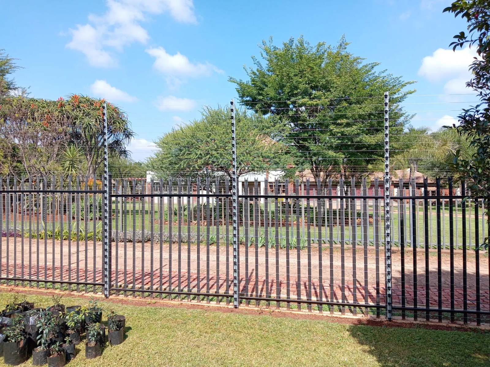
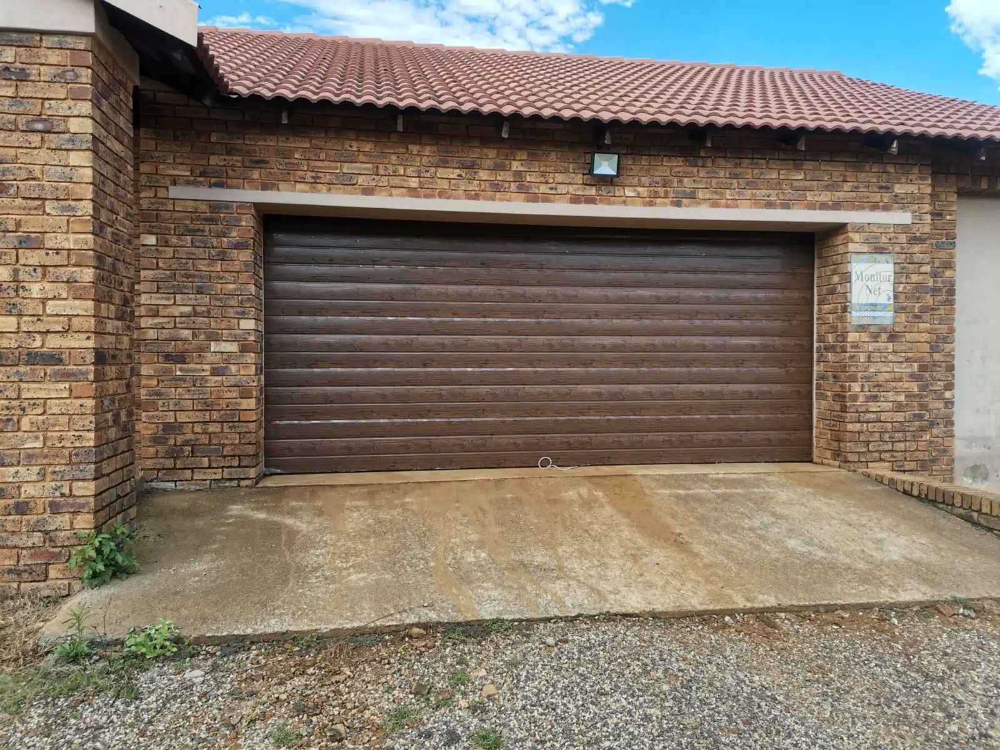
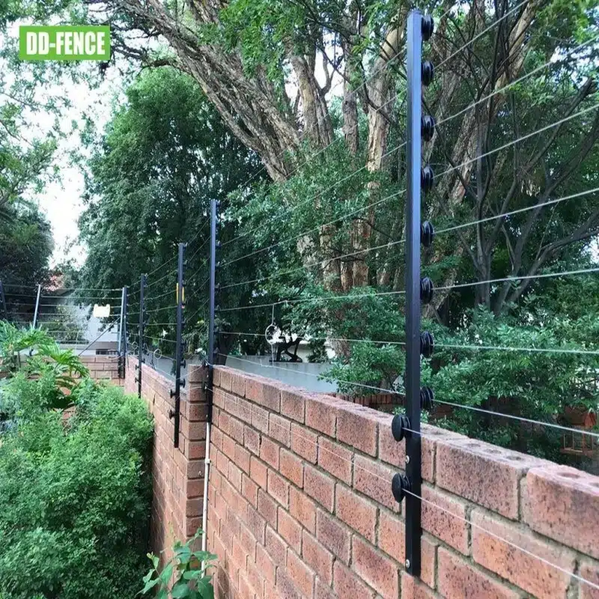

Innovation
We keep pace with useful new security and home-automation products.
About us
We help Pretoria homeowners and businesses keep their entrances and security systems working properly—with practical advice, responsive support and workmanship built to last.

Gate Repairs PretoriaOur story
Our journey began in 2017 with a clear vision: to provide dependable security and automation solutions for homes and businesses. Since then, we have served property owners across Pretoria with repairs, installations and ongoing support.
We have grown through continuous technician training, better products and strong relationships with some of the security industry’s largest suppliers. That gives clients informed recommendations and access to trusted equipment at fair prices.
We assess before recommending, keep common parts close at hand and only suggest replacement when continued repair no longer makes financial sense.
What guides us
Every repair or installation should leave you with a safer property and a clear understanding of the work completed.
We keep pace with useful new security and home-automation products.
Continuous training builds practical knowledge across automation and security.
Supplier partnerships help us source dependable equipment and support.
We explain the fault, available options and price before work begins.
Why choose us
When repair is viable, we repair. When replacement makes more sense, we explain why.
Explore our services →Hands-on knowledge across gate motors and integrated security.
Pretoria-wide coverage with same-day support available.
Careful testing, warranties and support after installation.
“Exceptional service! This company goes above and beyond to meet their customers’ needs. I could not be happier with the results.”
KobusFaerie Glen, Pretoria
Recent work
Systems we repair and install for residential and business clients.

